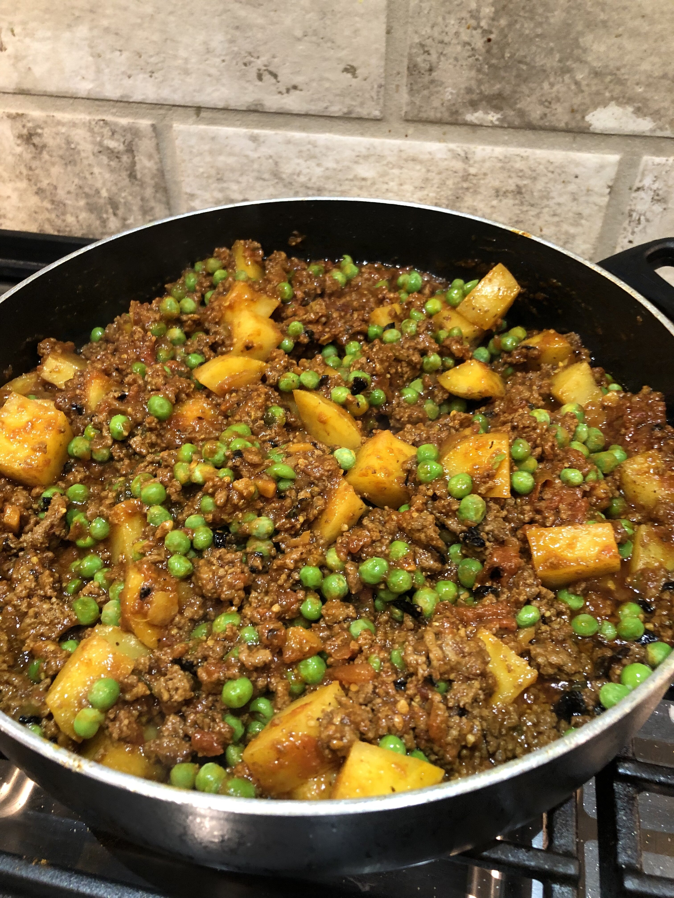

Keema Aloo

Description
Keema Aloo, also known as ground beef with potatoes is a homemade pakistani classic. I grew up eating this dish and vividly remember my mom making it on weekends for a hearty lunch/dinner. The mix of ground beef and potatoes with the addition of green peas combines to create a filling, nutritious meal with light undertones.
Ingredients
- 2 tablespoons extra-virgin olive oil
- 1 extra-large Spanish onion, chopped
- 2 tablespoons water (Optional)
- 2 pounds lean ground beef
- 4 cloves garlic, minced
- 2 tablespoons grated fresh ginger root
- 1 serrano chile pepper, finely chopped
- 2 teaspoons chopped fresh cilantro
- 1 tablespoon ground coriander
- 1 ½ teaspoons salt
- 1 ½ teaspoons ground cumin
- 1 teaspoon ground cayenne pepper
- 1 teaspoon ground turmeric
- 1 (28 ounce) can diced tomatoes
- 3 potatoes, peeled and diced
- 1 cup frozen green peas
- 1 teaspoon garam masala
Steps
- Heat olive oil in a large saucepan over medium-high heat. Cook and stir onion in the hot oil until soft and beginning to brown, about 12 minutes. If browned bits of onion are stuck to the bottom of the pan, stir water into onion and stir to loosen the browned bits.
- Mix ground beef, garlic, ginger, serrano chile, and cilantro into pan; cook and stir until beef is browned and crumbly, 10 to 15 minutes. Reduce heat to medium-low. Stir coriander, salt, cumin, cayenne pepper, and turmeric into the beef; cook and stir until flavors blend, about 5 minutes. Add tomatoes and potatoes, cover pot, and simmer until potatoes are tender, about 15 minutes
- Mix green peas into dish and cook until sauce has slightly thickened and flavors have blended, 10 to 15 minutes. Sprinkle garam masala over the dish, cover, and let stand for 5 minutes before serving.